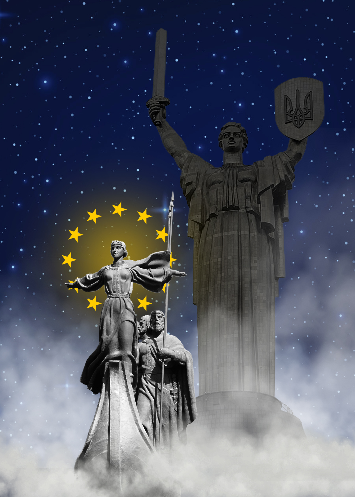
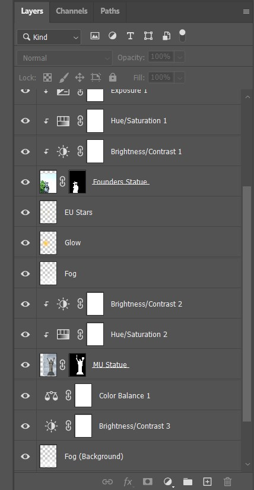

This piece, intended as a piece of agitprop, depicts Ukraine’s past, present, and future development as a state. Ukraine as a country, despite assuming its modern form and identity more recently, traces its origins back to the Kyivan Rus, a historical polity consisting of various principalities, centered around and dominated by the city of Kyiv. According to legend, the city owes its existence to the four mythological founders of the city of Kyiv: Kyi, Shchek, Khoryv, and their sister, Lybid. As the city which eventually came to be the center of the historic Kyivan Rus, it has immense significance to the heritage of Ukraine, but also Belarus and Russia.
The mythological founders of Kyiv are depicted on a boat cutting through fog, with Lybid stretching out her arms, and her brothers behind her, armed with spears and bows. As part of this piece, Lybid leads with her wings outstretched like wings, with a halo composed of the stars of the European Union, showing both the European origins of Ukraine, and its desire and direction towards the modern European community. In the background looms a large female statue, a personification of Ukraine itself, bearing a sword and a shield emblazoned with the coat of arms of Ukraine, the Tryzub (trident), an ancient symbol also tied to the Kyivan Rus. This statue, called “Mother Ukraine”, bears its arms and stands ready to defend the forward trajectory of the four siblings. In times where Ukraine’s very existence as a separate people is attacked, this piece is meant to communicate the historical roots of the current struggle, and honor those that serve in this struggle.
I have decided on a more traditional atmosphere and composition, preferring masking, adjustment layers, and separate layers for effects like fog and glow. I first searched extensively for pictures of the two statues which would match in their orientation (where they are facing) and lighting, allowing for a more harmonious and impactful composition. I then used adjustment layers to further unify the two subjects, before making changes to lighting, exposure, and contrast to emphasize the foreground over the background. The fog was used in various positions relative to the statues to add depth to the entire composition. The images are mostly sourced from Wikimedia Commons, which provided an interesting challenge in finding pictures to use, since the selection is much more limited.
